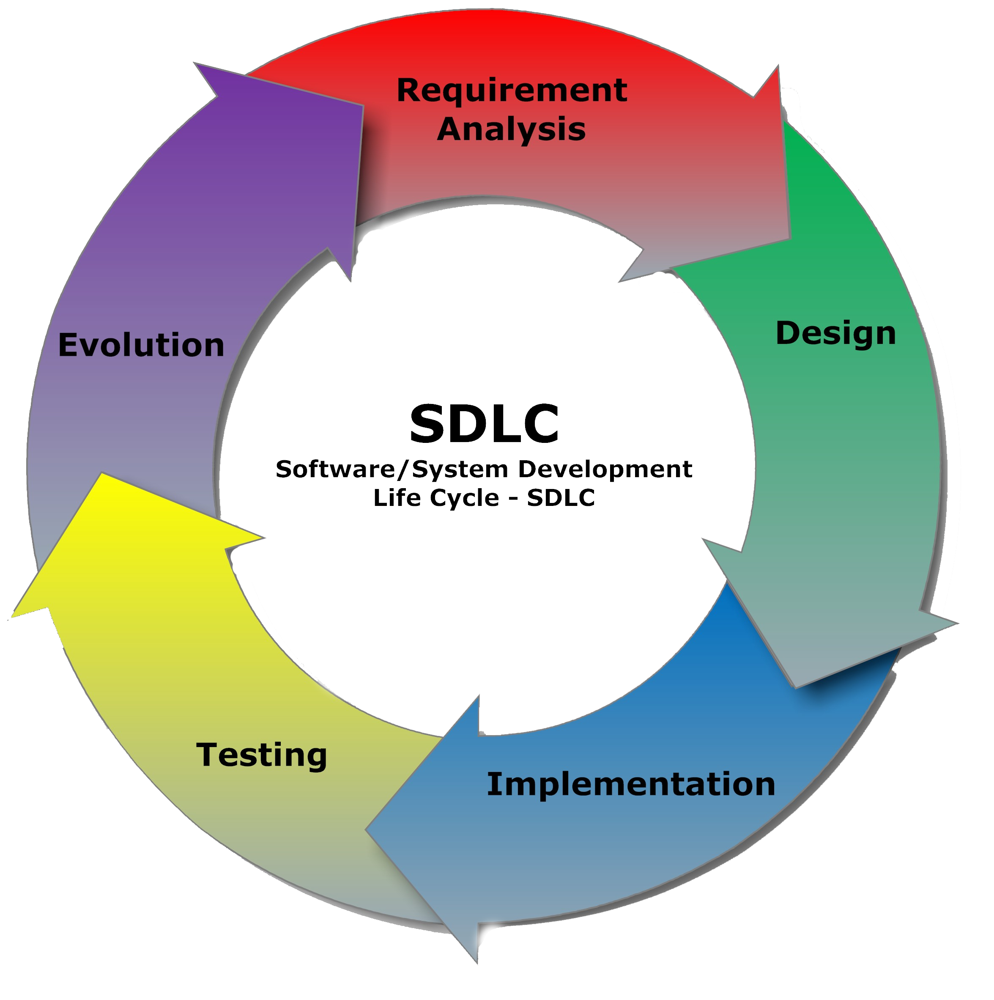
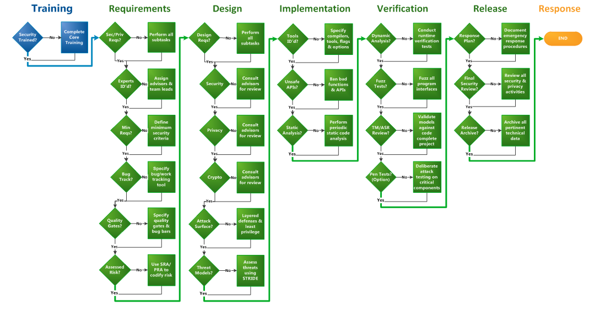
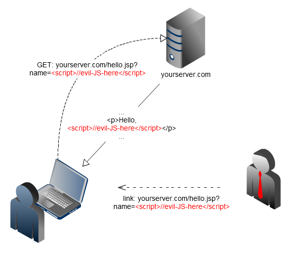

Teknologiforum 11.06.14
Applikasjonssikkerhet og sikker kode
Sikkerhetsarkitekt, PIT
Appsec?
Agenda
- Intro til sikker utviklingssyklus (SDL)
- Hvorfor skal du bry deg?
- Sikkerhetsprinsipper / patterns
- Noen vanlige sårbarheter og feil
SDL
Microsoft SDL
Hvorfor bry seg?
Appsec har to aspekter:
1. Sikkerhetsfunksjonalitet
≠
2. Sikker funksjonalitet
Ingen kan knekke applikasjonen din like bra som deg
Patterns
Antipattern: Security by obscurity
public void checkAdminCookie(HttpServletRequest request){
for (Cookie cookie : request.getCookies()) {
if (cookie.getName().equals("admin") &&
cookie.getValue().equals("true"){
setAdminMode();
}
}
} Stol ikke på klienten
Klienten skal ikke ta sikkerhetsavgjørelser
...som inputvalidering, autorisasjonskontroll o.l.
Ikke lagre hemmeligheter på klientsiden
Stol aldri på data fra klienten
- http-parametre for GET, POST, HEAD, PUT...
- Enhver del av URL
- http headere (inkl cookies)
- ...og alt annet som kommer fra klientsiden
Never trust user input!
(It'll give you fleas)
Really!
Sikkerhet i dybden
Få sikkerhetstiltak er ufeilbarlige
Kombiner overlappende teknikker
Laveste tilgangsnivå
Brukere og prosesser skal ikke ha unødvendig store tilganger
Begrens angrepsflaten
Ikke eksponer unødvendige tjenester og unødvendig funksjonalitet
Vanlige feil
- SQL injection
- Cross site scripting
- Cross site request forgery
- Session hijacking
SQL injection
Å lure DB-serveren
public void updateUser(String userSuppliedName, long userID){
String query = "UPDATE users SET name='" +
userSuppliedName + "' WHERE id=" + userID;
getJdbcTemplate().execute(query);
}
SELECT email FROM users WHERE username='$userInput';
Input: jon
SELECT email FROM users WHERE username='jon';
Input: hack'; UPDATE users SET passwd='abc' WHERE username='admin
SELECT email FROM users WHERE username='hack'; UPDATE users SET passwd='abc' WHERE username='admin';
Photo: Unknown
Demo
Utnytte en enkel SQLi-sårbarhet
Fiks
public void updateUser(String userSuppliedName, long userID){
String query = "UPDATE users SET name='" +
userSuppliedName + "' WHERE id=" + userID;
getJdbcTemplate().execute(query);
}
public void updateUser(String userSuppliedName, long userID){
String query = "UPDATE users SET name=? WHERE id=?";
getJdbcTemplate().update(
query, new Object[]{userSuppliedName, userID});
}
Oppsummering: SQL injection
- Skrekkelig!
- Enkel fiks
Cross site scripting (XSS)
Å lure webserveren
Reflektert XSS

Reflektert XSS

Demo
Unytte normal XSS

Foto: Sahil Anand
Angrepsmål for XSS
Angrep mot applikasjonen
Integritet og konfidensialitet er borte!
Angrep mot klienten
Fin angrepsvektor for å utnytte sårbarheter på klienmaskinen
Fiks
Input av data: validering
Streng validering mot kjente lovlige verdier er veldig effektivt!
Blacklisting (< > " ' ...) ikke i like stor grad, men kan være nyttig
Lisa O'Reilly?
Output av data: escaping
Encode data slik at "kommandotegn" blir ufarlige
http://yoursite.com/hello.jsp?name=<script>alert('This is XSS');</script>
Sårbar, ikke-escapet bruk av inputen:
In jsp: <p>Hello, ${name}</p>
Resulting html: <p>Hello, <script>alert('This is XSS');</script></p>
Sikker, html-escaped bruk av inputen:
In jsp: <p>Hello, <c:out value="${name}"/></p>
Resulting html: <p>Hello, <script>alert('This is XSS')</script></p>
Utfordringen: Vi må escape for riktig context, over alt!
Andre former of XSS
Stored XSS
Brukerinput blir lagret på server, så inkludert i html
DOM based XSS
Script som leser input fra bruker, og så
skriver html(.innerHtml, .outerHtml, .html(), document.write, createElement)
eller eksekverer direkte (eval(), setInterval(), setTimeout(), location.replace)
XSS: Oppsummering
- Veldig, veldig vanlig
- Ille, men ofte* begrenset til enkeltsesjoner eller requests
- Vanskelig å løse universielt
- Bruk inputvalidering, escaping av output, og helst en Content Security Policy
Cross Site Request Forgery (CSRF)
Å lure vevmyserens sesjonshåndtering
Demo
Forutsigbare requests til en server kan forfalskes
CSRF: Fiks
Litt uforutsigbarhet
<form action="account.jsp">
<input type="hidden" name="csrf_token"
value="FRUjQxPbyqmTtuXxip2tOWEqLFd">
Username: <input type="hidden" name="username" value="user">
Password: <input type="password" name="password">
...
</form>
CSRF: Oppsummering
- Enkelt & effektivt angrep
- Enkel fiks (tokens)
Sesjonsstjeling
http er tilstandsløs
JSESSIONID=y2rzQ9JRgrP9J3vCX3phJ1XJbDdgLqgDSBYM7qBRGSDQr7PdnF1B!-1147520699;
Beskyttelse av session cookie
1. Transport layer encryption (TLS/SSL)
2. Cookie flagg:
httpOnly - hindre tilgang fra script og XSS
secure - nekte overføring av cookie via ukryptert http
3. Reautentisering
hyperduperlenker
owasp.org OWASP Broken Web Applications Project OWASP Top 10
SQLi The SQL Injection Knowledge Base
XSS Try XSS yourself at Erlend Oftedal's insecurelabs.org An overview of DOM XSS Attack vectors at html5sec.org Attack vectors at ha.ckers.org
Verktøy OWASP Zed Attack Proxy (ZAP) Firefox add-on Tamper Data
Blog The .NET n00b - Security through http reponse headers troyhunt.com